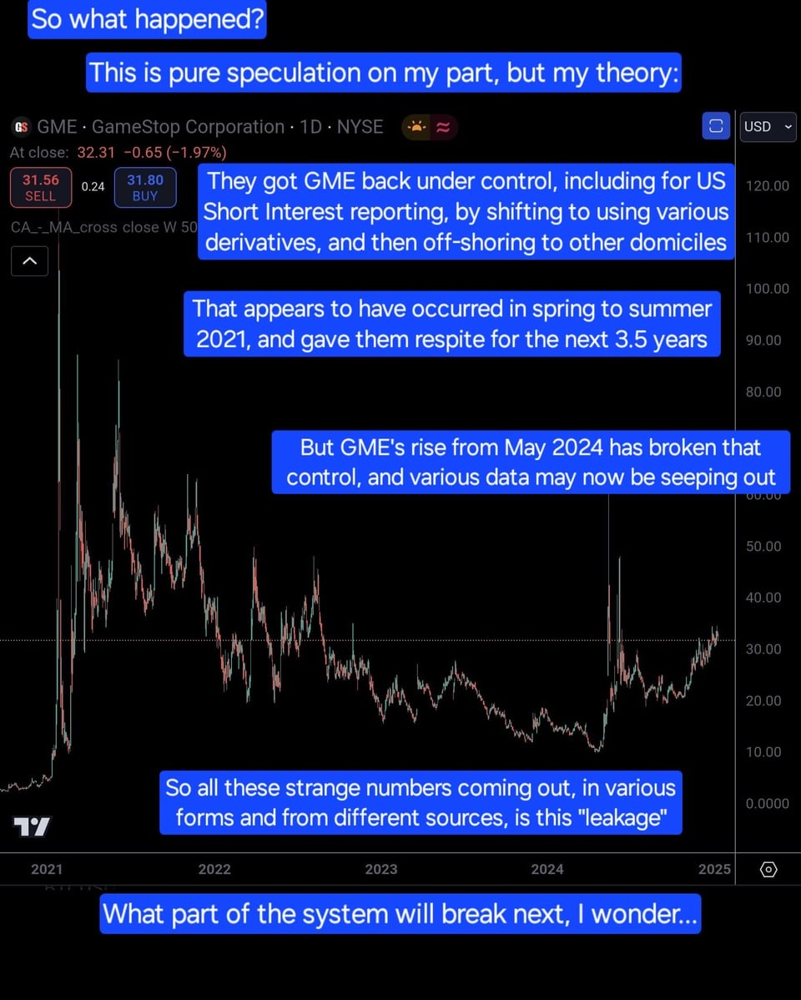

Key Figures
Figure 1: GameStop listed among exempted shares.
Figure 2: List of authorized dealers and exemptions.
Figure 3: GME’s stock performance on the London Stock Exchange.
Figure 4: DTCC repository anomalies indicating potential loopholes.

Figure 5: Timings of reported anomalies correlated with GME price activity.